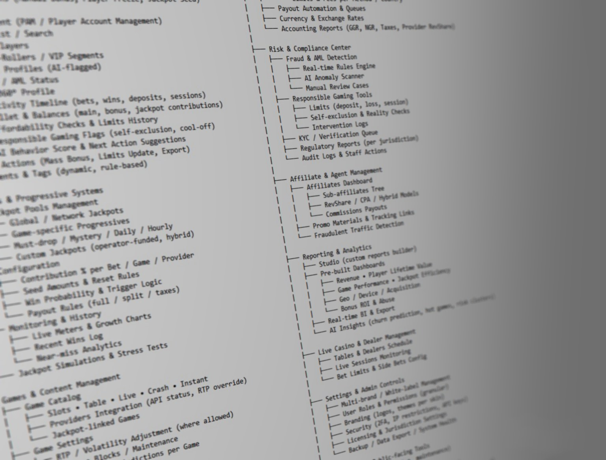
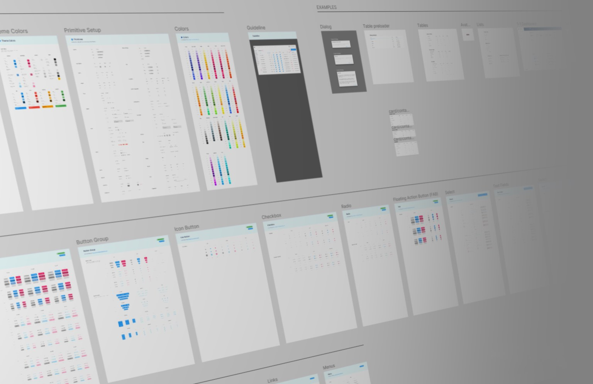
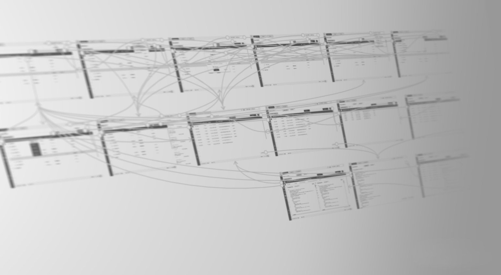
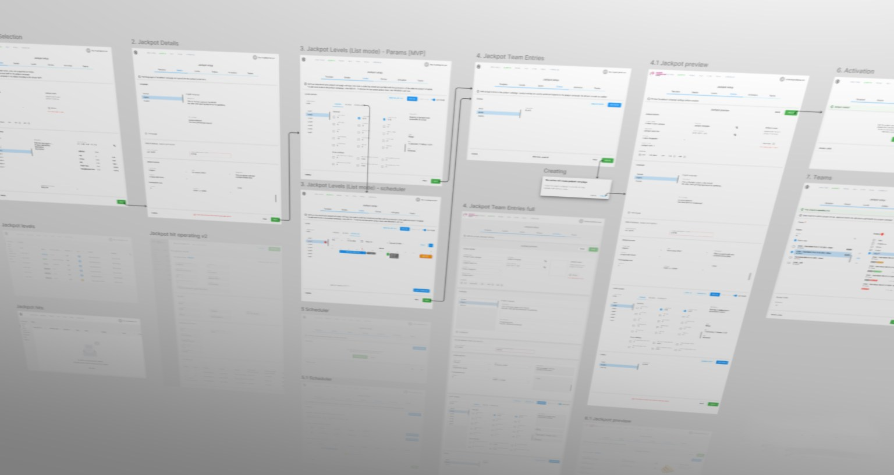

No design system, no style guide and no existing structure to build on. The jackpot logic and a complete back office were designed from zero, on a custom design system built on Material Design.
There was no information architecture or design system to start from, and the jackpot mechanics were new, so everything was built from scratch.

We built the design system on Google’s Material Design, so every screen stayed consistent while we focused on the complex jackpot logic.

I mapped the critical workflows through research and validated each user flow in rounds of wireframes.

Delivered on schedule: a scalable platform that made admins faster and cut operational errors.
